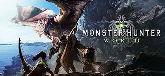

Monster Hunter: World is an action role-playing game developed and published by Capcom. A part of the Monster Hunter series, it was released worldwide for PlayStation 4 and Xbox One in January 2018, with a Microsoft Windows version in August 2018.

In the game, the player takes the role of a Hunter, tasked to hunt down and either kill or trap monsters that roam in one of several environmental spaces. If successful, the player is rewarded through loot consisting of parts from the monster and other elements that are used to craft weapons and armor, amongst other equipment. The game's core loop has the player crafting appropriate gear to be able to hunt down more difficult monsters, which in turn provide parts that lead to more powerful gear. Players may hunt alone, or can hunt in cooperative groups of up to four players via the game's online services.
몬스터헌터 :월드 Steam버전 트레일러 영상
몬스터헌터 :월드 PlayStation버전 트레일러 영상